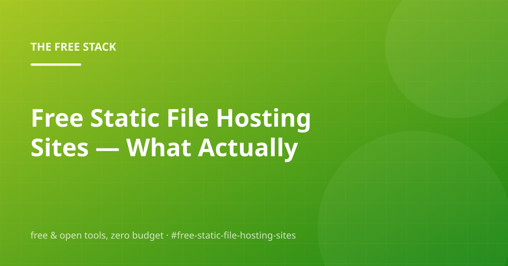

Free Static File Hosting Sites — What Actually Works in 2026

This is the kind of post The Free Stack exists to write: a practical, no-fluff guide to free static file hosting sites, assembled from free tiers, open-source projects and endpoints that ask for no API key at all.
We'll walk through Why Static Hosting Is Free, Github Pages, Cloudflare Pages, and Netlify Free Tier — and finish with the questions people actually ask, so you can check before you buy anything. You shouldn't have to buy anything.
Why Static Hosting Is Free
Skip the fluff and start here: Static sites are cheap to host because there is no server to keep awake — which is why so many hosts give the tier away.
The upshot: Files are cached at edge nodes and served from memory; there is no database, no runtime, no scaling. When the marginal cost of serving a page approaches zero, hosting becomes a feature to win signups — and that is the deal a personal blog gets to keep.
Keep it this simple and you'll be ahead of most tutorials out there.
Github Pages
Skip the fluff and start here: GitHub Pages is a free static-hosting service built directly into the repo that already hosts your code.
The upshot: Point Pages at any subdirectory of a repository and GitHub serves it over HTTPS with a built-in URL, custom domain support, and automatic deploys on every push. For a static blog the entire hosting bill is zero, with no server, no DNS glue, and no renewal dates.
If you only do one thing today, make it this one.
- Pick a directory (e.g. autopilot-blog/site/) as the site source in repo Settings → Pages
- Push (or let the engine push) the built HTML and the site deploys in under a minute
- Optionally map a custom domain in the same settings page
Cloudflare Pages
Start with the basics. Cloudflare Pages is a free static hosting platform with a global CDN and preview deploys for every pull request.
The upshot: Connect a Git repo and every branch or PR gets its own preview URL, while the main branch gets a production URL on Cloudflare's network. The free tier covers static sites comfortably and custom domains are supported without a separate CDN bill.
If you only do one thing today, make it this one.
- Create a Pages project in the Cloudflare dashboard and link the repo
- Point the build output at the static folder
- Add a custom domain in the project's domains tab
Netlify Free Tier
Worth spending ten minutes on: Netlify's free tier hosts a static site with SSL, CI/CD from Git, forms and generous bandwidth — no card required.
So what does that look like when you're actually doing it? Netlify is the classic pick for static sites: drag a folder in or connect a repo, and it handles builds, redirects, and TLS certificates automatically. The free plan's limits are far beyond what a personal blog ever needs.
If you only do one thing today, make it this one.
Frequently asked questions
What are the real limitations of free static file hosting sites?
GitHub Pages is a free static-hosting service built directly into the repo that already hosts your code. Treat that as the working assumption and re-check the docs once a quarter.
Can I keep this free forever, or is it a trial?
Mostly, yes. Cloudflare Pages is a free static hosting platform with a global CDN and preview deploys for every pull request. The free tier is the product, not the teaser — but the paid tier exists for when you need slas, support or volume.
Is free static file hosting sites actually free?
Netlify's free tier hosts a static site with SSL, CI/CD from Git, forms and generous bandwidth — no card required. Treat that as the working assumption and re-check the docs once a quarter.